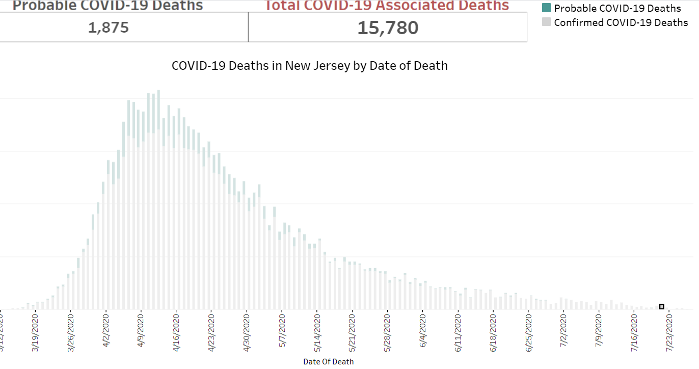
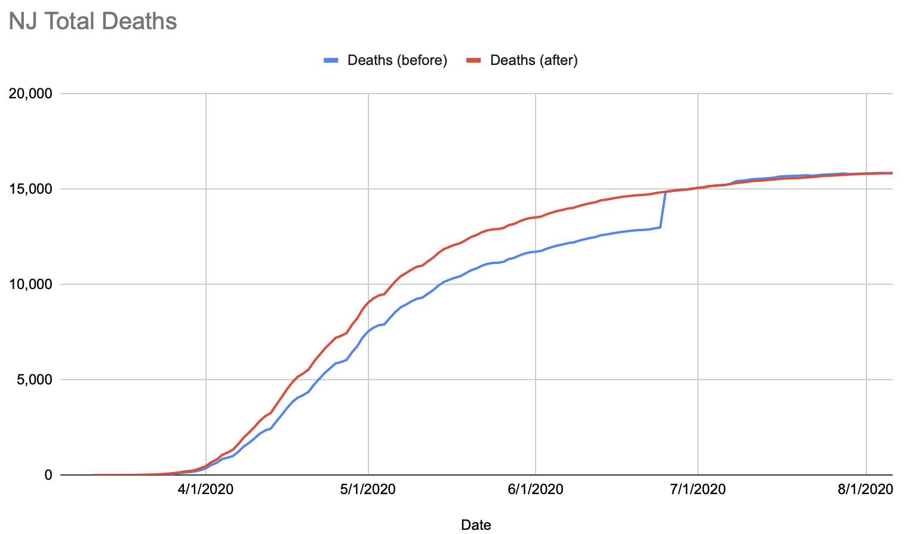
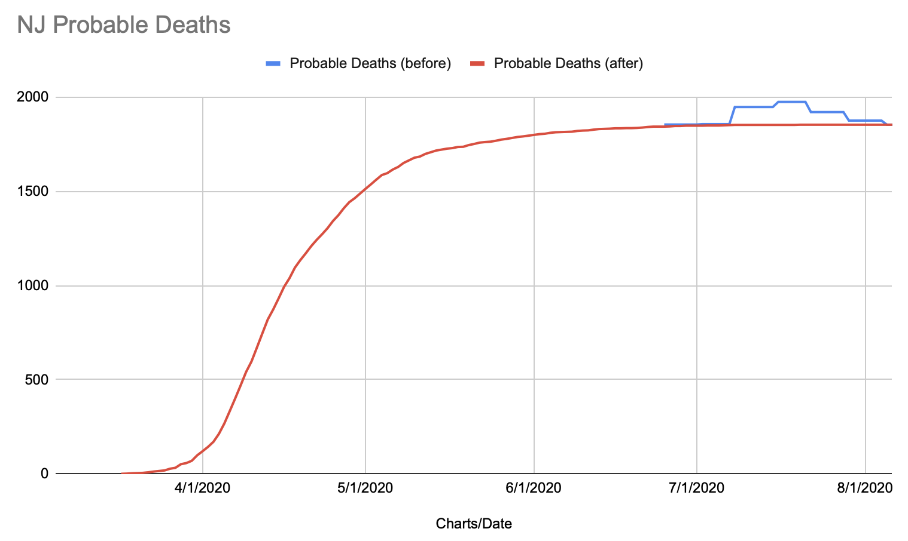

NJ: Backfilling probable deaths from 6/26 & 7/8
Issue number 590
amandafrench opened this issue on July 8, 2020 at 4:28 pm
State or US: [NJ]
Describe the problem NJ has twice now reported previously-determined Probable deaths. We have asked them for the data so we can backfill but have not received it yet. Placeholder issue for doing the backfill once we receive it. “On May 16, New Jersey had a significant jump in recovered (about 7,000) due to backfilling previous days after a shift in how this figure was reported on April 28. On June 25th, New Jersey reported 1854 probable deaths that occured in the past. This causes a perecived increase in the daily number of deaths.” 89 new probable deaths on 7/8.
Link to data source https://covid19.nj.gov/#live-updates https://covidtracking.com/data/state/new-jersey
Found on 8/3: NJ dashboard now has a time series for their deaths separated by probable and confirmed. However, we should note that these are by ‘Date of Death.’ (Dash --> Top tab labeled ‘Case and Mortality Summaries’ --> Bottom tab labeled ‘Mortality Summary’)
We may be able to make an exception regarding ‘date of death’ for this case?
The hover-over graph looks like this: 
New Jersey probable deaths have been backfilled based on the state’s historical time series. Total deaths were updated to take into account the new distribution of probable deaths. This smooths out the big jumps that took place on 6/25 and 7/8 as well as the declines on 7/22 and 7/29. Confirmed deaths were not backfilled; this column remains as reported by the state each day on its dashboard.
Total deaths before/after: 
Probable deaths before/after: 
State data source: https://covid19.nj.gov/#live-updates Backfill spreadsheet with NJ raw data, old copy of States Daily, etc: https://docs.google.com/spreadsheets/d/1HCQSdm9mpEOY3vCd3E9sBqxPoui4MB0M--DMrFxBTNU/edit#gid=466605614
The backfill team plans to do this weekly on Wednesday, the same cadence NJ uses for updating its probable death numbers.
This issue has been automatically marked as stale because it has not had recent activity. It will be closed if no further activity occurs. Thank you for your contributions!